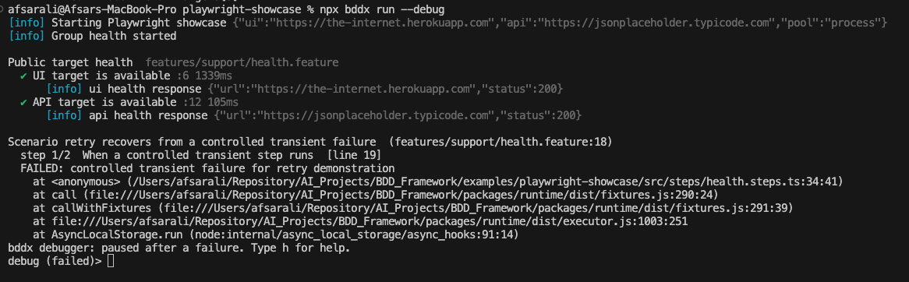

Debugging and watch mode
When a scenario fails and the error is not enough, run it under the debugger. When you are writing steps, watch mode re-runs what you changed.
Pause when a step fails
$ npx bddr features/checkout.feature:12 --debugbddr runs one scenario at a time, with no retries and no timeouts, and stops after the first failing step. You get a prompt:
| Key | Does |
|---|---|
c | Continue to the end. |
n | Run the next step, then pause. |
r | Retry the failed step. |
s | Print the scenario state. |
e <expression> | Evaluate an expression with ctx in scope, for example e ctx.scenario.name. |
q | Quit. |
--debug-step pauses before every step, not only after a failure. The debugger needs a terminal. Without one it exits with code 2.

Use your editor's debugger
$ npx bddr features/checkout.feature:12 --inspect--inspect opens the Node inspector on port 9229 and waits for a debugger to attach. Use --inspect 9230 for another port. Attach VS Code with the "Attach" launch type, or open chrome://inspect in Chrome. Set breakpoints in your step files.
Watch mode
$ npx bddr --watch- Each run starts in a new process, so changes to steps, page objects and the config are always picked up.
- Saving a
.featurefile re-runs just that file. Saving anything else re-runs your original selection. - Changes during a run are collected into the next run.
- Keys: Enter or a runs all, f runs the failed ones, q quits.
- It ignores
node_modules,.git,.bddr,distandreports.
--watch cannot be combined with --debug or --dry-run.
Turn up the logging
$ npx bddr --log-level debugThe console shows your ctx.log messages. At debug it also shows framework messages such as plugin start-up. Reports always contain every log line.
Other things to try first
npx bddr validatefinds undefined steps and typos without running anything.npx bddr plan --explain <id>says why a scenario waits or was skipped.- With Playwright, set
trace: 'on'and open the trace withnpx playwright show-trace. With either browser plugin, run once with-D headed=true --workers 1to watch it.